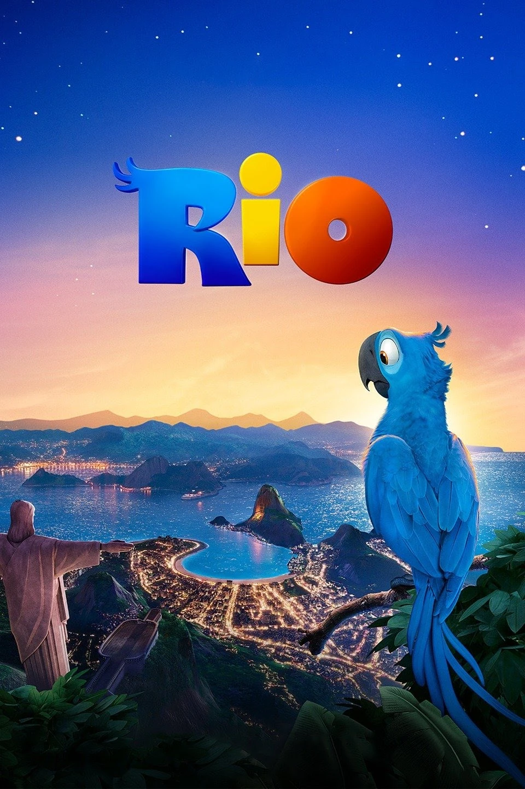
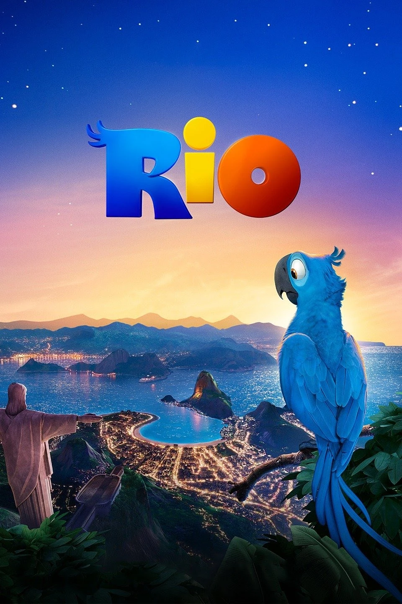

el rio
es una pelicula que trata
Capturado por contrabandistas cuando era apenas una cría, un guacamayo llamado Blu nunca aprendió a volar y vive una vida feliz domesticado en Minnesota con su amiga humana, Linda. Blu se piensa que es el último de su especie, pero cuando escuchan que Jewel, una solitaria hembra, vive en Río de Janeiro, Blu y Linda emprenderán un viaje a su encuentro.
 
